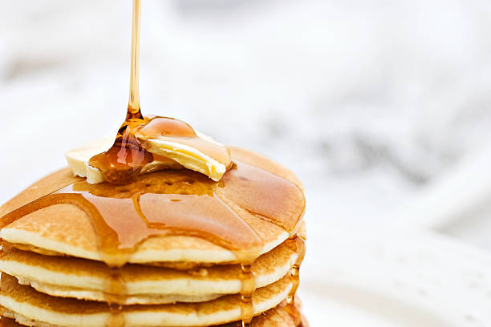

Home
Pancakes Recipe
This pancakes recipe yields 8 servings.

This fluffy and delicious pancake recipe will be a great start to any morning. Ready in 20 minutes.
Ingredients
- 1 1/2 cups all-purpose flour
- 3 1/2 teaspoons baking powder
- 1 teaspoon salt
- 1 tablespoon sugar
- 1 1/14 cups milk
- 1 egg
- 3 tablespoons butter, melted
Steps
- In a large bowl, sift together the flour, baking powder, salt and sugar.
- Make a well in the center and pour in the milk, egg, and melted butter; mix until smooth.
- Heat a griddle or frying pan with a small amount of oil over medium heat.
- Pour the batter onto the griddle or pan, using around 1/4 cup for each pancake.
- Cook until both sides are browned and serve while hot.
Credit to food.com for this simple pancake recipe.